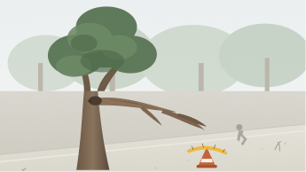

Community Intake
Cancel and return to feed
Report an Issue
Public civic reporting for Indonesian municipal services.
Independent
Verification
Our verification desk checks each report and routes it to the municipal agency (Bina Marga, PAM JAYA, Dishub, DLH, Satpol PP, Citata). Resolution timestamps are tracked publicly.
Step 03
of 04
Attach evidence
Reports with photographic
proof or audio notes are prioritized by field dispatchers.
Upload evidence files or use
camera simulation
Images, audio voice notes,
inspection video clips (JPG, MP4, M4A)
Capture Photo
Record Audio Memo
Capture Photo
Attached evidence (2)
Click any card to
inspect

incident_capture_camera.jpg
IMAGE
˙ 2.4 MB
Photographed live on-site
by resident camera.
0:12
quick_site_clip.mp4
VIDEO
˙ 4.8 MB
12-second horizontal pan
of incident.